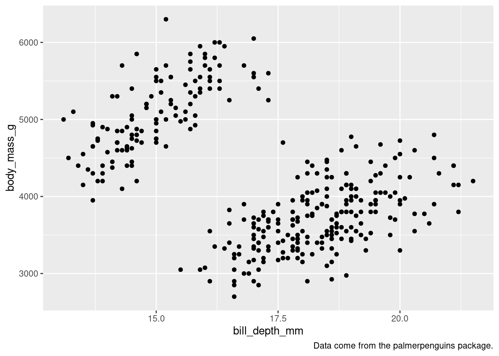
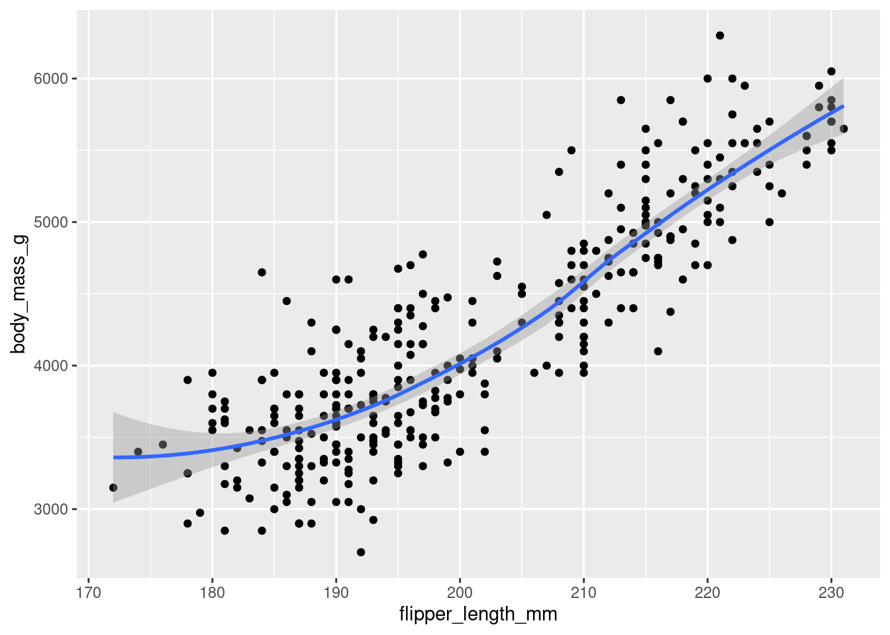
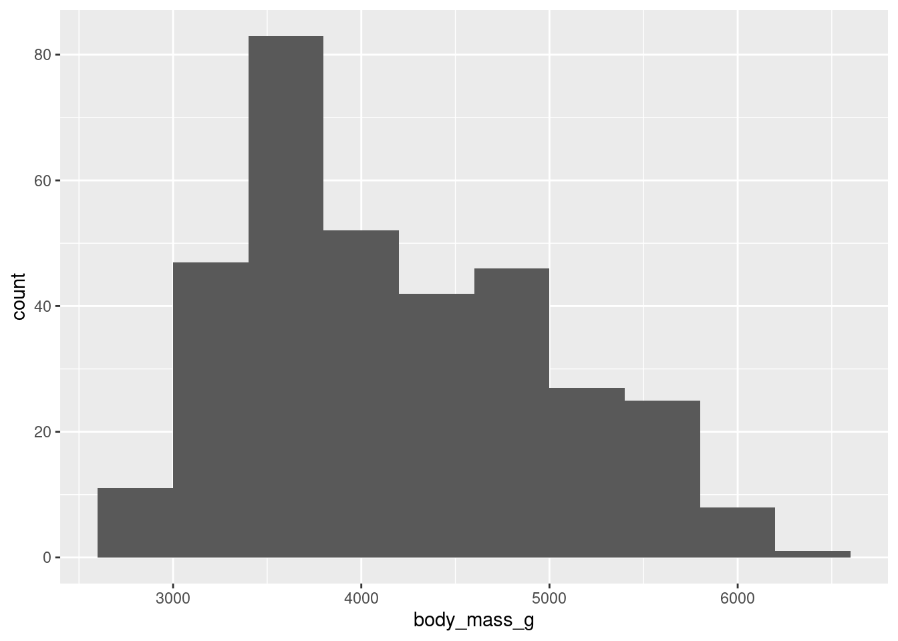

library(palmerpenguins)
library(tidyverse)3 Data visualization
The pipe is introduced in Chapter 5 but for these early chapter our solutions will include it!
2.2.5
How many rows are in
penguins?
How many columns?
It’s possible to see the number of rows and columns by typing:
glimpse(penguins)Rows: 344
Columns: 8
$ species <fct> Adelie, Adelie, Adelie, Adelie, Adelie, Adelie, Adel…
$ island <fct> Torgersen, Torgersen, Torgersen, Torgersen, Torgerse…
$ bill_length_mm <dbl> 39.1, 39.5, 40.3, NA, 36.7, 39.3, 38.9, 39.2, 34.1, …
$ bill_depth_mm <dbl> 18.7, 17.4, 18.0, NA, 19.3, 20.6, 17.8, 19.6, 18.1, …
$ flipper_length_mm <int> 181, 186, 195, NA, 193, 190, 181, 195, 193, 190, 186…
$ body_mass_g <int> 3750, 3800, 3250, NA, 3450, 3650, 3625, 4675, 3475, …
$ sex <fct> male, female, female, NA, female, male, female, male…
$ year <int> 2007, 2007, 2007, 2007, 2007, 2007, 2007, 2007, 2007…but to get a code output:
nrow(penguins)[1] 344ncol(penguins)[1] 8and to find the dimensions of an object (the columns and rows):
dim(penguins)[1] 344 8What does the
bill_depth_mmvariable in thepenguinsdata frame describe? Read the help for?penguinsto find out.
There is a nice description and picture on Allison Horst’s GitHub.
Make a scatterplot of
bill_depth_mmvs.bill_length_mm. That is, make a scatterplot withbill_depth_mmon the y-axis andbill_length_mmon the x-axis. Describe the relationship between these two variables.
Because this pipes the data into the chart the parameter data = penguins is redundant. It is commented out just to show where it would be if it hadn’t been piped. By piping the data into the plotting code it means that if you type x = then tab you get a list of the potential columns you can use in the code.
penguins |>
ggplot(#data = penguins,
mapping = aes(x = bill_depth_mm,
y = bill_length_mm)) +
geom_point()Warning: Removed 2 rows containing missing values (`geom_point()`).What happens if you make a scatterplot of
speciesvs.bill_depth_mm?
When deciding which data is plotted on the y the suggestion is often to put the first on the y. The following could be either way but it does make it easier to read the species names if they are on the y axis.
penguins |>
ggplot(#data = penguins,
mapping = aes(x = bill_depth_mm,
y = species)) +
geom_point()Warning: Removed 2 rows containing missing values (`geom_point()`).What might be a better choice of geom?
Density plots with a coloured line, this could be replaced with fill = species to move from the line to a more solid chart.
linewidth isn’t mentioned in the R4DS and in some code may be lwd or size (although that is deprecated)
penguins |>
ggplot(#data = penguins,
mapping = aes(x = bill_depth_mm,
colour = species)) +
geom_density(linewidth = 2)Warning: Removed 2 rows containing non-finite values (`stat_density()`).Or a boxplot:
penguins |>
ggplot(#data = penguins,
mapping = aes(x = bill_depth_mm,
fill = species)) +
geom_boxplot()Warning: Removed 2 rows containing non-finite values (`stat_boxplot()`).Why does the following give an error and how would you fix it?
ggplot(data = penguins) +
geom_point()Gives the following error:
Error in `geom_point()`:
! Problem while setting up geom.
ℹ Error occurred in the 1st layer.
Caused by error in `compute_geom_1()`:
! `geom_point()` requires the following missing
aesthetics: x and y
Run `rlang::last_trace()` to see where the error occurred.The error is pointing out there are no aesthetics added, including x and y axis information.
penguins |>
ggplot(mapping = aes(x = bill_depth_mm,
y = body_mass_g)) +
geom_point()Warning: Removed 2 rows containing missing values (`geom_point()`).
What does the
na.rmargument do ingeom_point()? What is the default value of the argument? Create a scatterplot where you successfully use this argument set toTRUE.
There are missing data points (either on the x or the y) so gives a warning in the console along with the plotted chart:
Warning message: Removed 2 rows containing missing values (
geom_point()).
It is saying that the missing value data is dropped.
Adding na.rm = TRUE into the geom_point() removes these missing value data poins and so there is no longer a warning printed in the console.
The default value of na.rm = is FALSE.
penguins |>
ggplot(mapping = aes(x = bill_depth_mm,
y = body_mass_g)) +
geom_point(na.rm = TRUE)
Add the following caption to the plot you made in the previous exercise: “Data come from the palmerpenguins package.” Hint: Take a look at the documentation for
labs().
penguins |>
ggplot(mapping = aes(x = bill_depth_mm,
y = body_mass_g)) +
geom_point(na.rm = TRUE) +
labs(caption = "Data come from the palmerpenguins package.")
Recreate the following visualization. What aesthetic should
bill_depth_mmbe mapped to? And should it be mapped at the global level or at the geom level?
Mapped to the geom_level:
penguins |>
ggplot(mapping = aes(x = flipper_length_mm,
y = body_mass_g)) +
geom_point(aes(colour = bill_depth_mm),
na.rm = TRUE) +
geom_smooth(na.rm = TRUE)`geom_smooth()` using method = 'loess' and formula = 'y ~ x'
But mapping to the global level gives a warning as the colour is also being applied to the geom_smoothand subsequently gets dropped:
penguins |>
ggplot(mapping = aes(x = flipper_length_mm,
y = body_mass_g,
colour = bill_depth_mm)) +
geom_point(na.rm = TRUE) +
geom_smooth(na.rm = TRUE)`geom_smooth()` using method = 'loess' and formula = 'y ~ x'Warning: The following aesthetics were dropped during statistical transformation: colour
ℹ This can happen when ggplot fails to infer the correct grouping structure in
the data.
ℹ Did you forget to specify a `group` aesthetic or to convert a numerical
variable into a factor?- Run this code in your head and predict what the output will look like. Then, run the code in R and check your predictions.
The chart will have dots with flipper length along the bottom and body mass along the side. The dots will be coloured by the islands and there will be as many curvy lines as there are distinct islands but with no grey extensions/bits to the lines.
ggplot(
data = penguins,
mapping = aes(x = flipper_length_mm, y = body_mass_g, color = island)
) +
geom_point() +
geom_smooth(se = FALSE)`geom_smooth()` using method = 'loess' and formula = 'y ~ x'Warning: Removed 2 rows containing non-finite values (`stat_smooth()`).Warning: Removed 2 rows containing missing values (`geom_point()`).
- Will these two graphs look different? Why/why not?
They are the same because the first has the data and aes() which will be available to the geom() functions. The second is a repetition of the code leaving the global ggplot() empty but giving the same chart.
ggplot(
data = penguins,
mapping = aes(x = flipper_length_mm, y = body_mass_g)
) +
geom_point() +
geom_smooth()`geom_smooth()` using method = 'loess' and formula = 'y ~ x'Warning: Removed 2 rows containing non-finite values (`stat_smooth()`).Warning: Removed 2 rows containing missing values (`geom_point()`).
ggplot() +
geom_point(
data = penguins,
mapping = aes(x = flipper_length_mm, y = body_mass_g)
) +
geom_smooth(
data = penguins,
mapping = aes(x = flipper_length_mm, y = body_mass_g)
)`geom_smooth()` using method = 'loess' and formula = 'y ~ x'Warning: Removed 2 rows containing non-finite values (`stat_smooth()`).
Removed 2 rows containing missing values (`geom_point()`).
2.4.3
Make a bar plot of
speciesofpenguins, where you assignspeciesto theyaesthetic. How is this plot different?
The plot appears to be ‘flipped’ so the species are appearing on the left side (y axis).
ggplot(data = penguins,
aes(y = species))+
geom_bar()
This used to be done previously using coord_flip() which is still in {ggplot2}.
How are the following two plots different? Which aesthetic,
colororfill, is more useful for changing the color of bars?
ggplot(penguins, aes(x = species)) +
geom_bar(color = "red")
ggplot(penguins, aes(x = species)) +
geom_bar(fill = "red")What does the
binsargument ingeom_histogram()do?
ggplot(penguins, aes(x = body_mass_g)) +
geom_histogram()`stat_bin()` using `bins = 30`. Pick better value with `binwidth`.Warning: Removed 2 rows containing non-finite values (`stat_bin()`).
Bins represents the number of “buckets” that data is cut into, automatically this is 30.
To remove the warning message:
ggplot(penguins, aes(x = body_mass_g)) +
geom_histogram(bins = 10,
na.rm = TRUE)
Make a histogram of the
caratvariable in thediamondsdataset that is available when you load the tidyverse package. Experiment with different binwidths. What binwidth reveals the most interesting patterns?
ggplot(diamonds, aes(x = carat)) +
geom_histogram()`stat_bin()` using `bins = 30`. Pick better value with `binwidth`.
Bins changes the “buckets” or the number of cuts made to the data:
ggplot(diamonds, aes(x = carat)) +
geom_histogram(bins = 3)Whilst binwidth changes the size of the bin, cuts or “buckets”:
ggplot(diamonds, aes(x = carat)) +
geom_histogram(binwidth = 0.5)